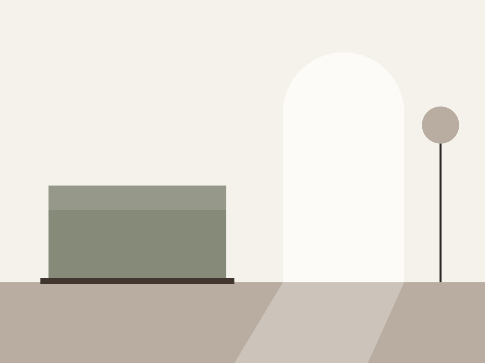
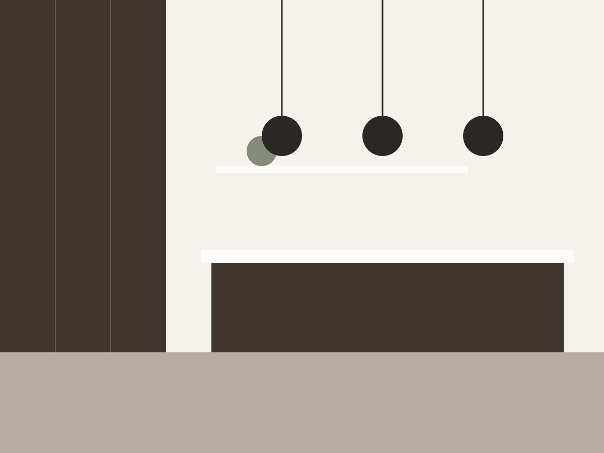

IL TUO PROGETTO, UN NUOVO PUNTO DI PARTENZA
La casa che immagini. Il progetto per realizzarla.
Progettare e arredare non dovrebbe significare perdersi tra cataloghi, preventivi e infinite possibilità.
Amarreda ti aiuta a trasformare le tue idee in soluzioni d’arredo concrete, attraverso un percorso guidato che unisce progettazione, tecnologia e prodotti reali.
Parti dalle tue esigenze. Scopri le possibilità. Scegli con maggiore consapevolezza.
Inizia il tuo progetto Scopri come funziona
Arredare casa dovrebbe essere più semplice.
Hai un’idea, immagini come vorresti vivere i tuoi spazi, ma quando arriva il momento di scegliere iniziano i dubbi.
Quale soluzione è davvero adatta alla tua casa? Quali marchi propongono ciò che cerchi? Come capire se il progetto è coerente con il tuo budget? E come confrontare alternative diverse senza ricominciare ogni volta da zero?
Amarreda nasce per aiutarti a mettere ordine tra esigenze, idee e possibilità concrete.
Non soltanto ispirazione, ma un percorso che ti accompagna dall’idea iniziale a una scelta più informata e consapevole.
Dalle idee alle soluzioni, con un percorso guidato.
Raccontaci la tua casa
Parti dai tuoi spazi, dalle tue necessità, dallo stile che ami e dal budget che vuoi rispettare. Puoi condividere le informazioni e i materiali disponibili per definire meglio il punto di partenza.
Esplora il tuo progetto
Le informazioni raccolte diventano la base per sviluppare proposte d’arredo coerenti con le tue esigenze, esplorare materiali e finiture e orientarti tra soluzioni e marchi compatibili.
Avvicinati alla scelta
Valuta le alternative, chiarisci i tuoi dubbi e porta il progetto verso il passaggio successivo: il confronto con un rivenditore o un professionista per le verifiche tecniche e il preventivo definitivo.

IL PRIMO AMBIENTE DA PROGETTARE
La tua cucina, pensata intorno a te.
La cucina è uno degli ambienti più importanti della casa. Deve essere bella, funzionale, proporzionata allo spazio disponibile e compatibile con il budget.
Con Amarreda puoi partire da ciò che conta davvero: come vivi la cucina, quali esigenze hai, quali vincoli presenta lo spazio e quale risultato desideri ottenere.
L’obiettivo è aiutarti a individuare una direzione progettuale concreta, da sviluppare con prodotti e soluzioni da verificare in funzione del tuo ambiente.
Una cucina non dovrebbe partire da un catalogo. Dovrebbe partire da te.
Progetta la tua cucinaPiù chiarezza. Meno tempo perso. Scelte migliori.
Un percorso su misura
Le tue esigenze guidano il progetto, non il contrario.
Soluzioni confrontabili
Valuta alternative d’arredo con criteri più chiari.
Prodotti reali
Avvicinati a marchi, materiali e soluzioni concrete, distinguendo i dati verificati da quelli da confermare.
Attenzione al budget
Parti dalle tue possibilità economiche per orientare le scelte.
Non un solo marchio. Più possibilità da esplorare.
Ogni casa è diversa e non esiste un’unica soluzione adatta a tutti.
Amarreda punta a mettere in relazione i tuoi obiettivi con prodotti, collezioni e marchi pertinenti, per aiutarti a valutare le alternative in funzione dello stile, dello spazio e del budget.
La tecnologia aiuta a orientare la ricerca; le caratteristiche dei prodotti, la disponibilità, la compatibilità tecnica e i prezzi devono essere verificati attraverso informazioni attendibili e, quando necessario, con il rivenditore.
La scelta parte dalle tue esigenze, non da un marchio da vendere.
Esplora i brandUn punto di incontro tra chi progetta, chi produce e chi sceglie.
Per chi vuole arredare casa
Se stai ristrutturando, costruendo o semplicemente rinnovando un ambiente, puoi partire dalle tue esigenze e costruire una visione più chiara di ciò che desideri.
Per progettisti e professionisti
Uno strumento per valorizzare il lavoro progettuale, organizzare le informazioni e accompagnare il cliente verso decisioni più consapevoli.
Per rivenditori e produttori
Un’opportunità per entrare in contatto con clienti più consapevoli, con esigenze già raccolte e un progetto da approfondire.
L’intelligenza artificiale è uno strumento. Il progetto è il risultato.
Amarreda utilizza la tecnologia per rendere più accessibile il percorso di progettazione, organizzare le informazioni e facilitare l’esplorazione delle soluzioni.
Ma un buon progetto non è soltanto una bella immagine. Deve tenere conto dello spazio, delle abitudini, dei vincoli tecnici e delle caratteristiche effettive dei prodotti.
Per questo la visione di Amarreda unisce innovazione digitale, cultura del progetto e competenze professionali.
Tecnologia per immaginare. Progettazione per scegliere. Professionisti per realizzare.
La tua prossima casa inizia da un’idea.
Non devi avere già tutte le risposte. Ti basta sapere cosa vorresti migliorare, cambiare o realizzare.
Inizia dalle tue esigenze e scopri come trasformarle in un progetto d’arredo più chiaro, ragionato e vicino alla realtà.
Inizia il tuo progetto con AmarredaLe tue idee sono il punto di partenza. Il progetto prende forma passo dopo passo.